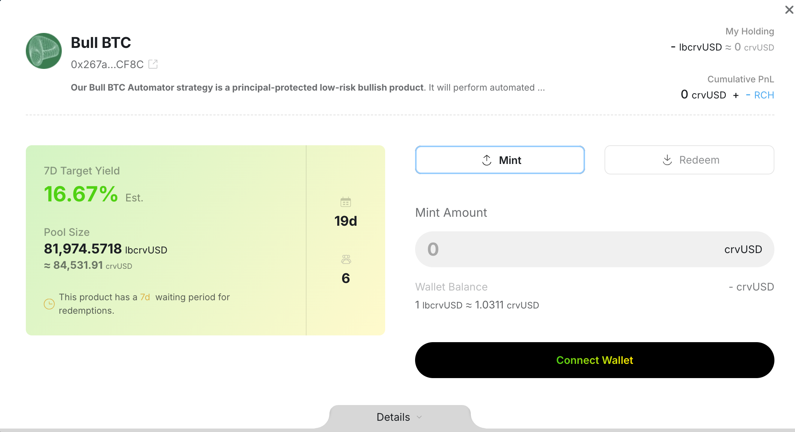
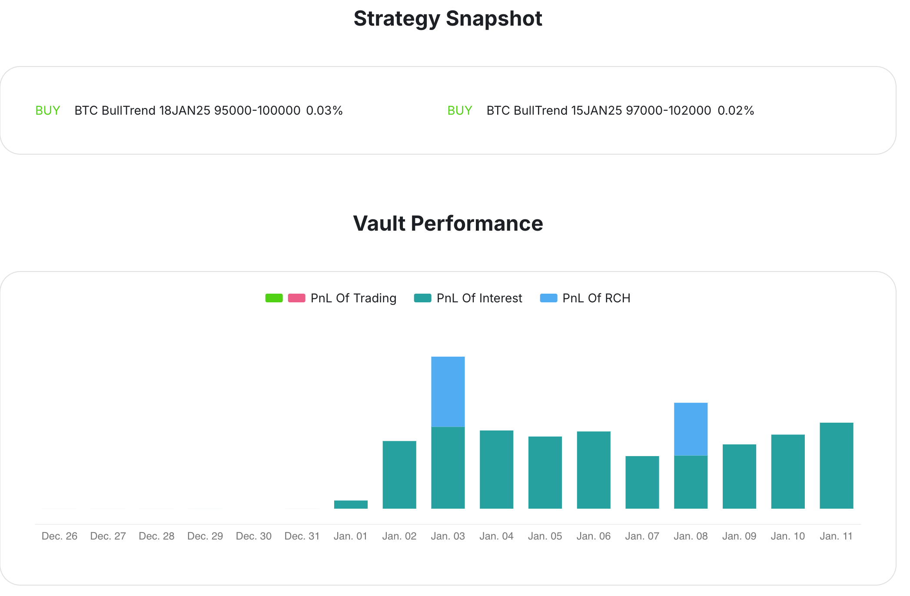
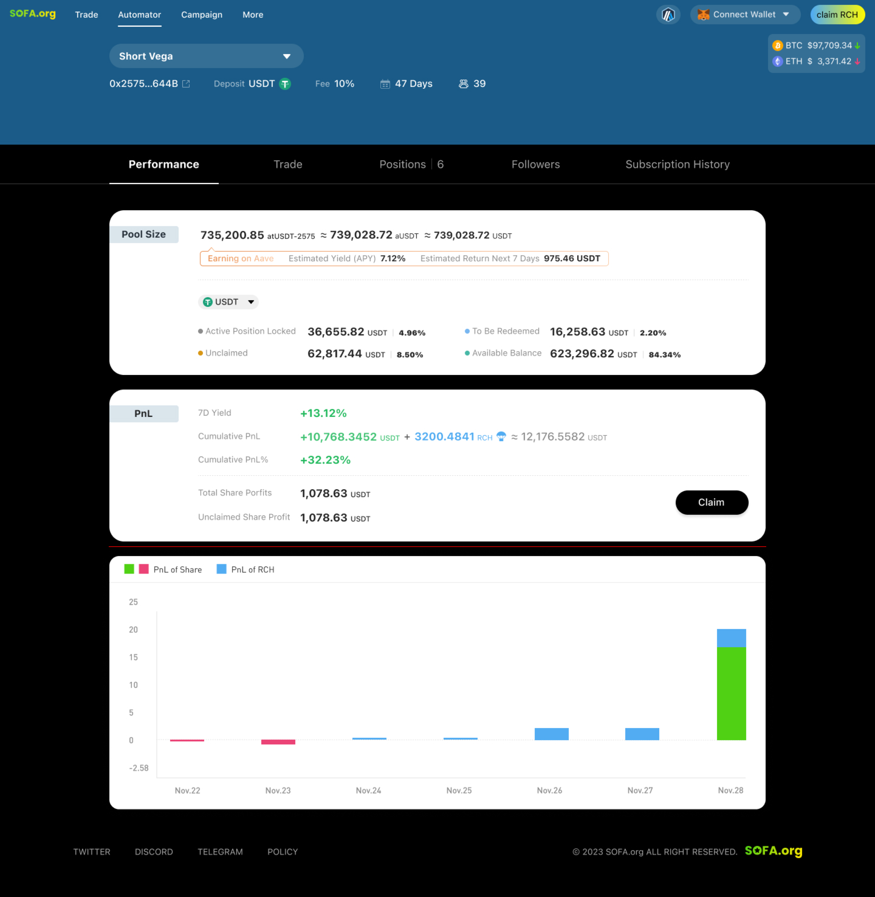
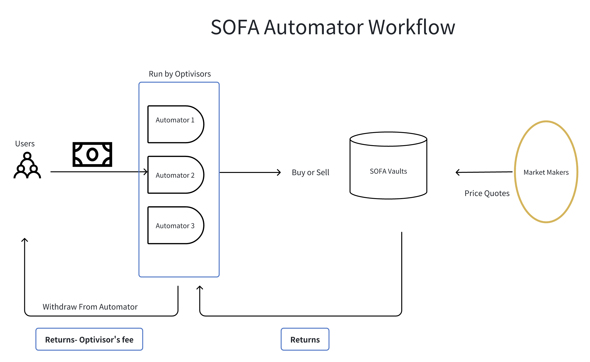

Automator
소개
대중을 위한 옵션 거래를 민주화하는 우리의 사명에서, SOFA 팀은 사용자가 전략 수익을 수동적으로 얻을 수 있는 직관적인 방법으로 Automator를 만들었습니다. 전략 관리자 커뮤니티인 Optivisors를 활용하여, 사용자는 소규모의 수익 공유 수수료를 대가로 그들이 선호하는 관리 전략에 참여할 수 있습니다. 이 윈-윈 모델은 예금자가 다양한 고품질 수익을 얻을 수 있도록 탈중앙화되고 온체인 접근을 제공할 것입니다.

주요 Automator 기능
커뮤니티 주도 디자인. Automator의 출시는 커뮤니티 참여에 대한 우리의 헌신을 반영하며, 탈중앙화 도구를 제공하여 DeFi 옵션 거래 여정을 민주화하고, 시간이 지남에 따라 발전하는 안전한 수익 솔루션에 대한 사용자 접근을 확장합니다.
직관적인 인터페이스. 복잡한 옵션 전략이 직관적이고 사용하기 쉬운 인터페이스로 정제되었으며, DeFi 정신에 일치하는 완전한 온체인 투명성과 전략 공개를 제공합니다.
시장 무관. SOFA 제품은 시장 전망에 관계없이 Optivisors에게 전략의 완전한 유연성을 제공하여 양 방향의 변동성 움직임으로부터 이익을 얻을 수 있도록 합니다.
상당한 가스 절약. Optivisors는 Automator에서 진행 중인 전략을 추가 가스 비용 없이 '롤'할 수 있어 장기적인 수익성과 지속 가능성을 촉진합니다.

Optivisors: 우리의 커뮤니티 전략 챔피언
Automator의 두드러진 기능 중 하나는 커뮤니티 주도 접근 방식에 있습니다. 우리의 DeFi 커뮤니티의 집단 지혜를 활용하여, 전략 제작자, 즉 Optivisors는 수동 예금자의 이익을 위해 진행 중인 SOFA 전략을 설계, 실행 및 모니터링할 수 있습니다. 그들의 전문성에 대한 대가로, Optivisors는 전체 전략 수익의 일부를 받아 경제적 인센티브를 정렬하고 장기적인 참여를 촉진하는 윈-윈 결과를 창출합니다.
SOFA가 제품 제공 및 체인 연결성을 확장함에 따라, Optivisors는 그들의 전략이 복잡성과 범위를 확장함에 따라 우리 생태계에서 점점 더 중요한 역할을 하게 될 것입니다. 추가 도구 및 CeFi 연결성을 통한 프로토콜 확장은 우리가 기대할 수 있는 실현 가능한 이정표를 제공하며, 우리는 다음 단계로 나아가기 위해 지속적인 커뮤니티 피드백을 장려합니다.

Automator 워크플로우

Automator FAQ
A. Automator는 어떻게 작동하나요?
Automator에는 세 가지 주요 참여자가 있습니다: 사용자, 옵티바이저, 마켓 메이커.
사용자
사용자는 선호하는 Automator를 선택하고 토큰을 예치할 수 있습니다. 옵티바이저의 전문성에 따라 Automator는 수익을 생성하며, 이는 참여하는 사용자들 사이에 분배됩니다. 또한, 사용자는 참여의 일환으로 인센티브 $RCH 토큰 에어드롭의 혜택을 누립니다.
옵티바이저
옵티바이저는 Automator를 생성하고 SOFA Vault와 상호작용하여 강세 및 약세 포지션과 같은 거래 전략을 실행하는 책임이 있습니다. 그들의 전문성에 대한 보상으로, 옵티바이저는 수익의 일부를 얻습니다.
마켓 메이커
다른 SOFA 제품과 유사하게, 마켓 메이커는 SOFA Vault에 대한 가격을 제공합니다. 옵티바이저 관리자는 이러한 견적을 활용하여 Automator 자금을 배분하고 SOFA Vault 전략에 참여합니다. 이러한 전략이 정산되면, 수익이 그에 따라 분배됩니다.
B. 어떤 수수료가 부과되나요?
프로토콜은 Automator가 생성한 수익에 대해 15%의 서비스 수수료를 부과합니다. 수익이 발생하지 않으면 서비스 수수료가 부과되지 않습니다.
옵티바이저는 Automator를 생성할 때 관리 수수료를 설정할 수도 있습니다. 이 수수료는 수익에만 적용되지만, 손실 기간 동안에는 부채로 기록됩니다. 옵티바이저는 Automator의 누적 수익이 긍정적으로 전환된 후에만 관리 수수료를 다시 수취할 수 있습니다.
C. 옵티바이저가 되어 Automator를 생성하려면 어떻게 해야 하나요?
누구나 옵티바이저로서 Automator를 생성할 수 있습니다. 그러나 각 주소는 체인 및 예치 토큰 유형당 하나의 Automator만 생성할 수 있습니다. 전략 할당량을 해제하려면 옵티바이저는 500 $RCH 토큰을 소각해야 합니다.
D. Automator 내의 가스 수수료는 어떻게 되나요?
옵티바이저는 Automator 내에서 실행되는 거래와 관련된 모든 가스 수수료를 부담할 책임이 있습니다.
E. Automator에 예치한 후 자금을 어떻게 인출할 수 있나요?
Automator는 자금처럼 작동하며, 유동성과 전략 실행을 관리하기 위해 상환 잠금 기간이 있습니다. 인출은 언제든지 시작할 수 있지만, 옵티바이저가 생성할 때 설정한 최대 30일까지 잠금 기간이 끝날 때까지 기다려야 합니다.
F. Automator로 어떤 종류의 수익을 기대할 수 있나요?
Automator 수익은 세 가지 주요 구성 요소로 구성됩니다:
이자
- Automator에 예치된 자금은 Aave 또는 Curve와 같은 저위험 프로토콜에 자동으로 스테이킹되어 수동 이자를 생성합니다.
- 이러한 수익은 실시간으로 업데이트되며, 인출 시 사용자의 지분에 따라 분배됩니다.
거래 PNL
- Optivisor의 거래 전략에서 발생한 수익
- 이러한 수익은 거래 전략이 만료된 후에만 반영되며, Optivisor가 포지션을 청구할 수 있습니다. 사용자는 출금 시 자신의 몫을 받습니다.
$RCH 인센티브
- Optivisor의 거래 활동을 통해 얻은 $RCH 토큰 에어드롭.
- 에어드롭은 Automator의 현재 보유자와 그들의 소유 지분에 따라 매일 분배됩니다. 사용자는 Claim $RCH 페이지에서 직접 $RCH 토큰을 청구할 수 있습니다.
G. Automator 사용과 관련된 위험은 무엇인가요?
Automator는 Optivisor가 옵션 거래 및 저위험 프로토콜을 위해 사용자 자금을 관리하기 때문에 위험이 따릅니다. Optivisor는 거래를 위해 이자 수익 또는 원금을 사용할지의 균형을 결정하며, 이는 Automator의 위험 수준에 영향을 미칩니다. 각 Automator는 최대 99.9%까지 범위가 있는 버퍼 한계를 가지고 있으며, 이는 저위험 프로토콜을 위해 예약된 자금의 비율을 나타냅니다. 사용자는 각 Automator의 특정 버퍼를 확인하여 자신의 위험 감수 성향에 맞는 것을 선택할 수 있습니다. SOFA는 무위험 거래를 보장하지 않으며, 원금 손실이 발생할 수 있습니다. 참여하기 전에 자신의 위험 감수 성향을 신중하게 평가하세요.
H. $RCH 에어드롭은 어떻게 생성되고 사용자의 계정에 분배되나요?
$RCH 토큰은 Optivisor의 거래 활동을 통해 얻어지며, 사용자는 이후에 다른 SOFA Vault와 마찬가지로 이를 청구할 수 있습니다. $RCH 에어드롭 정보는 여기에서 확인할 수 있습니다: https://docs.sofa.org/en/tokenomics/